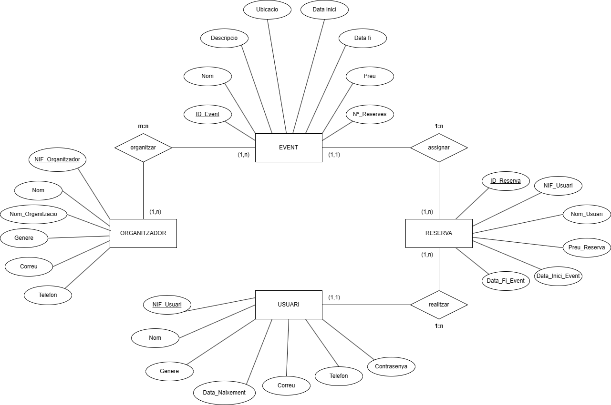

ÍNDEX
BASE DE DADES
La base de dades constarà de les següents taules:
- Organitzador
- Event
- Usuari
- Reserva
Una de les relacions m-n serà entre els organitzadors i els events, on un event pot ser hostejat per més d'un organitzador, i un organitzador pot crear més d'un event alhora Una de les relacions 1-n serà la dels usuaris i les reserves, ja que una reserva només pertany a un usuari, però un usuari pot fer més d'una reserva.
MODEL CONCEPTUAL. DIAGRAMA ENTITAT - RELACIÓ
El diagrama entitat-relació serveix per a fer el disseny de la base de dades, de manera que pots visualitzar les entitats, relacions i atributs dintre d’un sistema d’informació. He dissenyat el diagrama entitat-relació del meu sistema de gestió d’events. L’aplicació que he fet servir per al disseny és Draw.io.
El diagrama consta amb:
- Entitats i atributs
- Organitzador
- NIF
- Nom
- Nom de l'organització
- Gènere
- Correu
- Telèfon
- Event
- Identificador event
- Nom
- Descripció
- Ubicació
- Data inici
- Data final
- Preu
- Nº de reserves
- Reserva
- Identificador reserva
- NIF usuari
- Nom usuari
- Preu reserva
- Data inici event
- Data final event
- Usuari
- NIF
- Nom
- Gènere
- Data naixement
- Correu electrònic
- Telèfon
- Contrasenya
- Organitzador
- Relacions
- Organitzador - Event
La relació és m:n perquè un organitzador pot organitzar més d’un event i un event pot estar organitzar per més d’un organitzador.
- Event - Reserva
La relació és 1:n perquè un event pot tenir més d’una reserva i una reserva només pot pertànyer a un event.
- Reserva - Usuari
La relació és 1:n perquè una reserva només pertany a un usuari però un usuari pot fer més d’una reserva.
- Organitzador - Event
MODEL LOGIC - RELACIONAL
El model logic-relacional serveix per a representar l’estructura d’una base de dades relacional. Mostra com estan relacionats les dades dintre de la base de dades i com es relacionen entre elles. En aquest cas he fet la transformació del diagrama E-R anterior:
ORGANITZADOR (NIF_Organitzador, Nom, Nom_Organització, Gènere, Correu, Telèfon)
EVENT (ID_Event, Nom, Descripció, Ubicació, Data_Inici, Data_Fi, Preu, Nº_Reserves)
ORGANITZAR (NIF_Organitzador, ID_Event)
ORGANITZAR.NIF_Organitzador és clau al·liena de ORGANITZADOR
ORGANITZAR.ID_Event és clau al·liena de EVENT
USUARI (NIF_Usuari, Nom, Gènere, Data_Naixement, Correu, Telèfon, Contrasenya)
RESERVA (ID_Reserva, NIF_Usuari, Nom_Usuari, Preu_Reserva, Data_Inici_Event, Data_Fi_Event, ID_Event, NIF_Usuari)
RESERVA.ID_Event és clau al·liena de EVENT
RESERVA.NIF_Usuari és clau al·liena de USUARI
DISSENY FÍSIC
El disseny físic per a descriure la estructura d’una base de dades relacional. Defineix com s’organitzen i emmagatzemen les dades en el sistema de gestió de base de dades. A continuació mostro el disseny físic del sistema de gestió d’events:
CREATE TABLE Organitzador (
NifOrganitzador VARCHAR(9) PRIMARY KEY,
Nom VARCHAR(50),
NomOrganització VARCHAR(50),
Gènere VARCHAR(10),
Correu VARCHAR(100),
Telèfon VARCHAR(20)
);
CREATE TABLE Evento (
IdEvent VARCHAR(20) PRIMARY KEY,
Nom VARCHAR(100),
Descripcio VARCHAR(500),
Ubicacio VARCHAR(100),
DataInici DATE,
DataFi DATE,
Preu DECIMAL(10,2),
NºReserves INT(11)
);
CREATE TABLE Organitzar (
NifOrganitzador VARCHAR(20),
IdEvent VARCHAR(20),
PRIMARY KEY (NifOrganitzador, IdEvent),
FOREIGN KEY (NifOrganitzador) REFERENCES
Organitzador(NifOrganitzador) ON UPDATE CASCADE ON DELETE CASCADE,
FOREIGN KEY (IdEvent) REFERENCES
Evento(IdEvent) ON UPDATE CASCADE ON DELETE CASCADE
);
CREATE TABLE Usuari (
NifUsuari VARCHAR(9) PRIMARY KEY,
Nom VARCHAR(50),
Genere VARCHAR(25),
DataNaixement DATE,
Correu VARCHAR(100),
Telefon VARCHAR(9),
Contrasenya VARCHAR(50)
);
CREATE TABLE Reserva (
IdReserva VARCHAR(20) PRIMARY KEY,
NifUsuari VARCHAR(9),
NomUsuari VARCHAR(50),
PreuReserva DECIMAL(10,2),
DataIniciEvent DATE,
DataFiEvent DATE,
IdEvent VARCHAR(20),
Ubicacio VARCHAR(100),
FOREIGN KEY (IdEvent) REFERENCES
Evento(IdEvent) ON UPDATE CASCADE ON DELETE CASCADE,
FOREIGN KEY (NifUsuari) REFERENCES
Usuari(NifUsuari) ON UPDATE CASCADE ON DELETE CASCADE
);
PROVES EN LA BASE DE DADES
Una vegada hem inserit les dades anteriors en una base de dades, podem començar a fer comandes per a comprovar el funcionament de la nostra estructura:
Afegir organitzadors
INSERT INTO organitzador (NifOrganitzador, Nom, NomOrganització, Gènere, Correu, Telèfon) VALUES
(57648871C, 'Julian Perez', 'LOS 40', 'Hombre', 'jperez@ejemplo.com', '671829124'),
(91826722H, 'Maria Becerra', 'Big Data', 'Mujer', 'mbecerra@ejemplo.com', '612754882');
Afegir events en la taula events i organitzar
INSERT INTO evento (IdEvent, Nom, Descripcio, Ubicacio, DataInici, DataFi, Preu, NºReserves) VALUES
(1, 'Big Data World 2024', 'El mayor encuentro nacional para profesionales especializados.
En Big Data World podrás conocer lo último del sector y exponer tus estrategias junto a más de 400 empresas líderes del mercado.
Una forma perfecta de conectar con personas interesantes que te ayudarán a impulsar tu carrera profesional.',
'Madrid', '2024-10-16', '2024-10-18', 15.00, 149),
(2, 'LOS 40 Summer Live', 'Más de 40 nombres, entre artistas emergentes y estrellas de primerísimo nivel,
unirán su talento en un punto de encuentro que ya es un plan de verano ineludible.
Reúnete con tu familia o con tus amigos, vive una puesta de sol diferente esta temporada estival y crea recuerdos inolvidables con LOS40 Summer Live.'
'Madrid', '2024-07-06', '2024-08-08', 50.00, 999),
(3, 'LOS 40 Summer Live', 'Más de 40 nombres, entre artistas emergentes y estrellas de primerísimo nivel,
unirán su talento en un punto de encuentro que ya es un plan de verano ineludible.
Reúnete con tu familia o con tus amigos, vive una puesta de sol diferente esta temporada estival y crea recuerdos inolvidables con LOS40 Summer Live.'
'Cádiz', '2024-07-06', '2024-08-08', 50.00, 500),
(4, 'Big Data World 2024', 'El mayor encuentro nacional para profesionales especializados.
En Big Data World podrás conocer lo último del sector y exponer tus estrategias junto a más de 400 empresas líderes del mercado.
Una forma perfecta de conectar con personas interesantes que te ayudarán a impulsar tu carrera profesional.',
'Barcelona', '2024-10-19', '2024-10-20', 15.00, 150);
INSERT INTO organitzar (NifOrganitzador, IdEvent) VALUES
(57648871C, 2),
(57648871C, 3),
(91826722H, 1),
(91826722H, 4);
Afegir usuaris
INSERT INTO usuari (NifUsuari, Nom, Genere, DataNaixement, Correu, Telefon, Contrasenya) VALUES
(72312351G, 'Laura Pons', 'Mujer', '2002-09-06', 'lpons@ejemplo.com', '645271309', '1234'),
(91886012A, 'Paco Gonzalez', 'Hombre', '1992-03-06', 'pgonzalez@ejemplo.com', '651742640', '1234');
Afegir reserves
INSERT INTO reserva (IdReserva, NifUsuari, NomUsuari, PreuReserva, DataIniciEvent, DataFiEvent, IdEvent, Ubicacio) VALUES
(1, '91886012A', 'Paco Gonzalez', 50.00, '2024-07-11', '2024-07-26', 2, 'Madrid'),
(2, '72312351G', 'Laura Pons', 15.00, '2024-10-16', '2024-10-17', 1, 'Madrid');